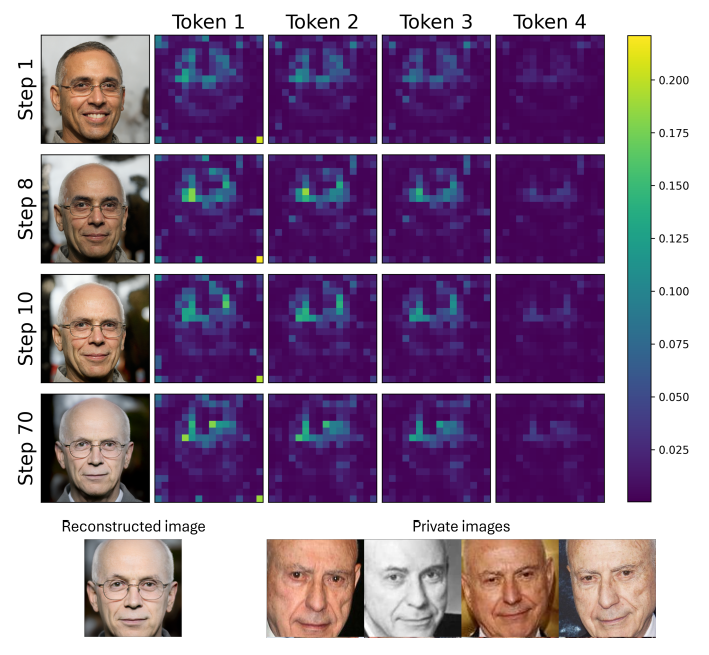
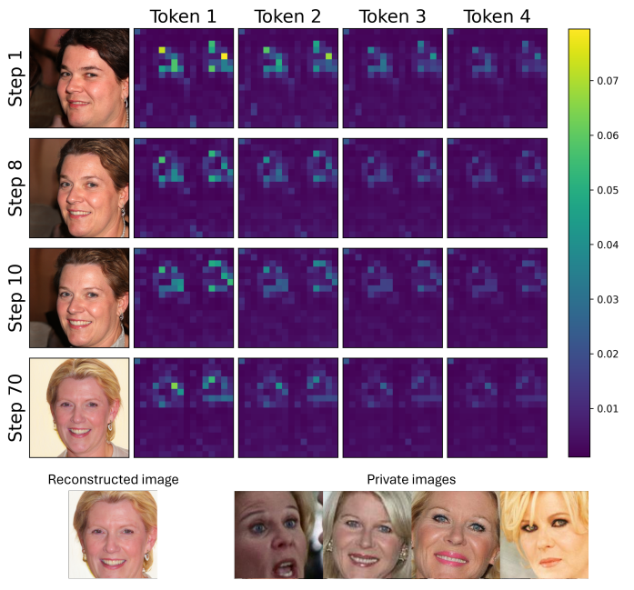
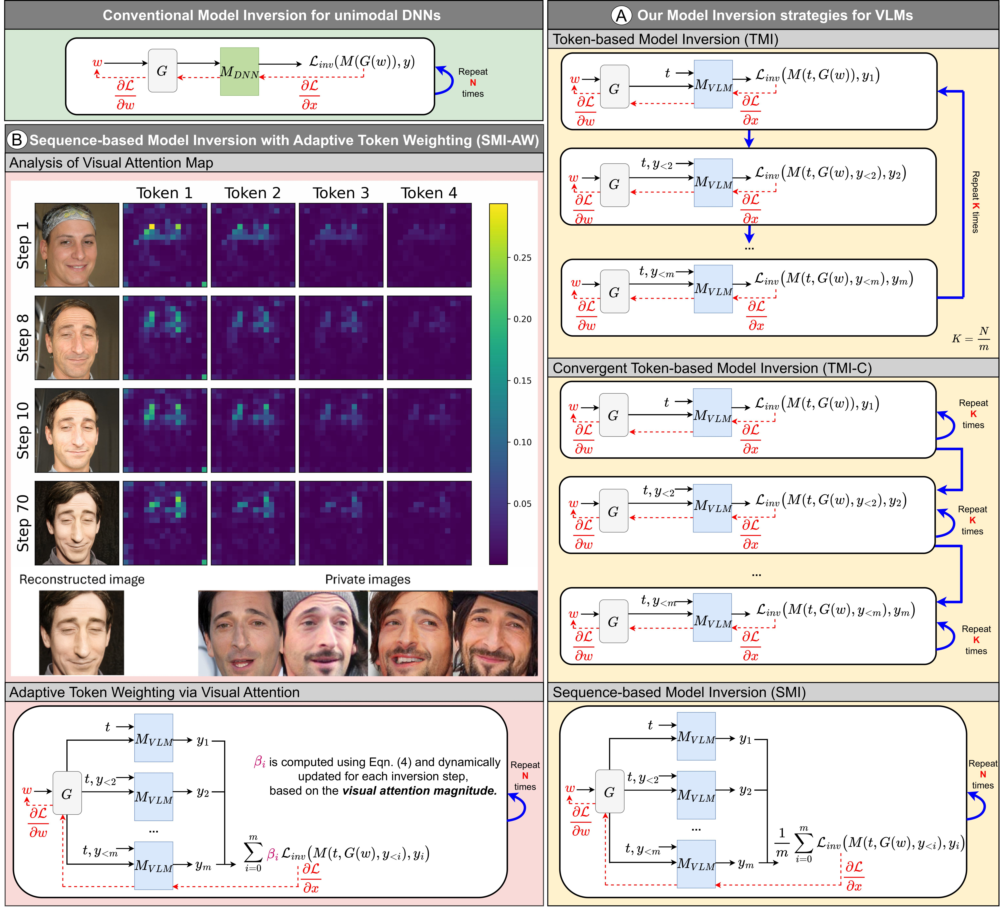
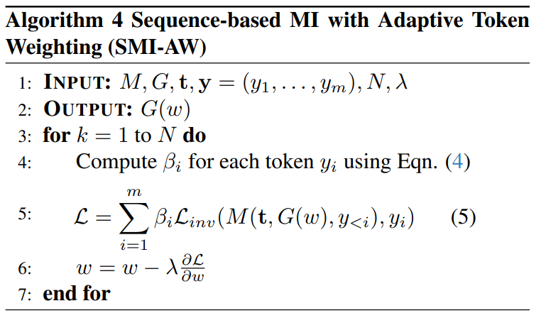
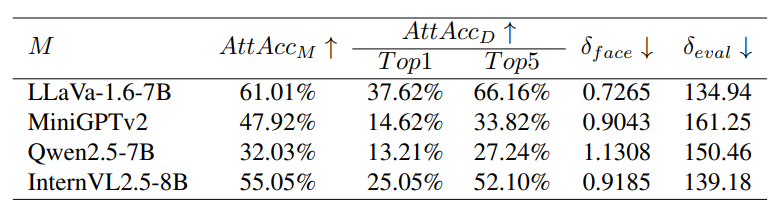
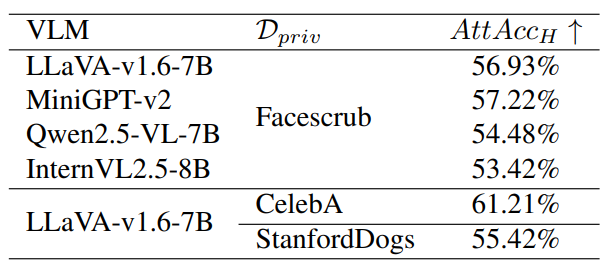
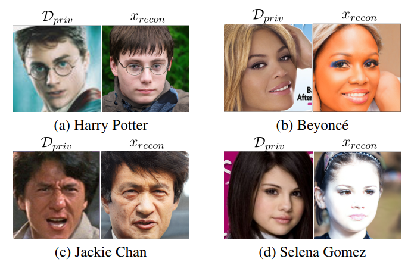

Figure 2: Overall comparison of results.

Model inversion (MI) attacks pose significant privacy risks by reconstructing private training data from trained neural networks. While prior studies have primarily examined unimodal deep networks, the vulnerability of vision-language models (VLMs) remains largely unexplored. In this work, we present the first systematic study of MI attacks on VLMs to understand their susceptibility to leaking private visual training data. Our work makes two main contributions. First, tailored to the token-generative nature of VLMs, we introduce a suite of token-based and sequence-based model inversion strategies, providing a comprehensive analysis of VLMs' vulnerability under different attack formulations. Second, based on the observation that tokens vary in their visual grounding, and hence their gradients differ in informativeness for image reconstruction, we propose Sequence-based Model Inversion with Adaptive Token Weighting (SMI-AW) as a novel MI for VLMs. SMI-AW dynamically reweights each token's loss gradient according to its visual grounding, enabling the optimization to focus on visually informative tokens and more effectively guide the reconstruction of private images. Through extensive experiments and human evaluations on a range of state-of-the-art VLMs across multiple datasets, we show that VLMs are susceptible to training data leakage. Human evaluation of the reconstructed images yields an attack accuracy of 61.21%, underscoring the severity of these privacy risks. Notably, we demonstrate that publicly released VLMs are vulnerable to such attacks. Our study highlights the urgent need for privacy safeguards as VLMs become increasingly deployed in sensitive domains such as healthcare and finance.



We observe that different output tokens have varying degrees of dependence on the visual input — some are strongly visually grounded, while others are less visually grounded and they are driven by prior linguistic context instead
If a token yi exhibits strong visual attention, it is likely more visually dependent, and its loss gradient carries richer visual information about the image. In other words, the strength of cross-attention could indicate how sensitive the token’s prediction is to the image content, which directly determines how informative its gradient is for model inversion. Therefore, we propose to use the magnitude of the attention map as a proxy for the informativeness of each token's loss gradient in a model inversion step and use it to weight its contribution to the overall inversion gradient — tokens with higher visual attention receive larger weights, while those with weaker visual grounding are down-weighted.
\[ \beta_i = \frac{\alpha_i}{\sum_{j=1}^{m} \alpha_j} \quad (4) \]
Algorithm:

We report the results of LLaVa-1.6-7B, Qwen2.5-VL-7B, MiniGPT-v2, and InternVL2.5-8B on the Facescub dataset.

We further conduct human evaluation on reconstructed images using three datasets Facescrub, CelebA, StanfordDogs. Each user study involves 4,240 participants for the FaceScrub dataset, 8,000 participants for the CelebA dataset, and 960 participants for the StanfordDogs dataset. The results show that 53.42% to 61.21% of the reconstructed samples are deemed successful attacks, i.e., human annotators recognize the generated images as depicting the same identity as those in the private image set

We reconstruct images of celebrities from the pre-trained LLaVA-v1.6-7B model. For each pair, the left image shows a training image in Dpriv while the right image presents the reconstruction xrecon obtained via our model inversion attack. This result illustrates that the pre-trained VLM is vulnerable to training data leakage through model inversion. More results can be found in the paper.

@inproceedings{
nguyen2026MIVLM,
title={Do Vision-Language Models Leak What They Learn? Adaptive Token-Weighted Model Inversion Attacks},
author={Ngoc-Bao Nguyen and Sy-Tuyen Ho and Koh Jun Hao and Ngai-Man Cheung},
booktitle={CVPR},
year={2026}
}
This research is supported by the National Research Foundation, Singapore under its AI Singapore Programmes (AISG Award No.: AISG2-TC-2022-007); The Agency for Science, Technology and Research (A*STAR) under its MTC Programmatic Funds (Grant No. M23L7b0021). This research is supported by the National Research Foundation, Singapore and Infocomm Media Development Authority under its Trust Tech Funding Initiative. Any opinions, findings and conclusions or recommendations expressed in this material are those of the author(s) and do not reflect the views of National Research Foundation, Singapore and Infocomm Media Development Authority. The work is sponsored by the SUTD Decentralised Gap Funding Grant.